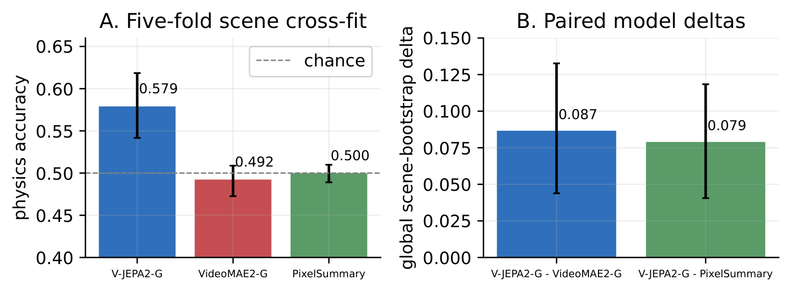

01 / Readouts
Physical-label classification
We train linear classifiers on frozen IntPhys2 features to distinguish possible from impossible events. Pooling all four appearances, classification is more accurate with V-JEPA2-G than with VideoMAE2-G or simple visual statistics. This tests whether label information can be read out; we test prediction error separately.
Five-fold scene cross-fit · 57 scenes · Post-hoc corrective analysis

Appearance labels and evaluation details
Appearance labels remain easy to recover. V-JEPA2-G's four-class appearance accuracy is approximately 98%, but appearance and physics classification do not provide a common scale for the amount of information encoded.
Five-fold scene cross-fitting keeps each scene's pairs and appearances together. The linear classifiers use class balancing and feature scaling fitted only on training data. The intervals condition on the fitted classifiers; they omit uncertainty from refitting them or changing the fold assignment.
Architecture and training differ across models, so the comparison covers the released representations as a whole and does not isolate the JEPA objective.